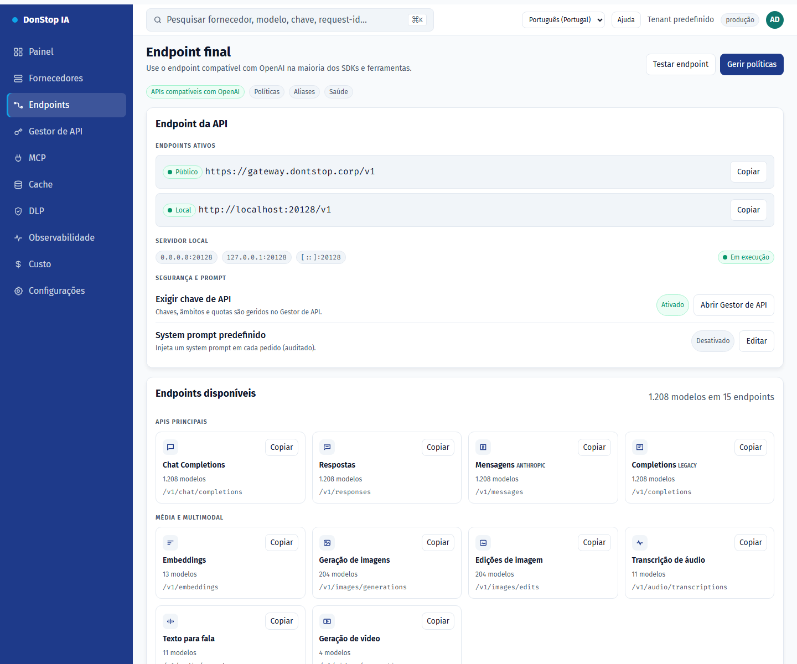

Endpoints

O que faz
Mostra o endpoint final da API, URLs pública e local, rotas disponíveis, aliases para CLIs e o system prompt opcional.
Quando utilizar
Utilize este ecrã quando precisar de inspecionar, configurar ou operar esta parte do gateway.
Passo a passo
- Abra Endpoints na barra lateral.
- Reveja os indicadores e a tabela principal.
- Utilize as ações descritas abaixo; as alterações aplicam-se imediatamente.
- Copie o URL público ou local e use os aliases para CLIs; não existem túneis.
Campos e ações
| Campo ou ação | Rótulo ou ação visível neste ecrã. |
|---|---|
| Base URL | Rótulo ou ação visível neste ecrã. |
| Público | Rótulo ou ação visível neste ecrã. |
| Local | Rótulo ou ação visível neste ecrã. |
| Endpoints disponíveis | Rótulo ou ação visível neste ecrã. |
| Aliases para CLIs | Rótulo ou ação visível neste ecrã. |
Erros e estados comuns
- Se os dados não carregarem, tente novamente. Se persistir, verifique o gateway e os fornecedores.
- Se uma ação estiver desativada, confirme o seu papel e o âmbito do tenant.
- Estados vazios são esperados antes do primeiro pedido; siga a chamada para ação.
Guias relacionados
Captura de ecrã de Endpoints em Português (Portugal).